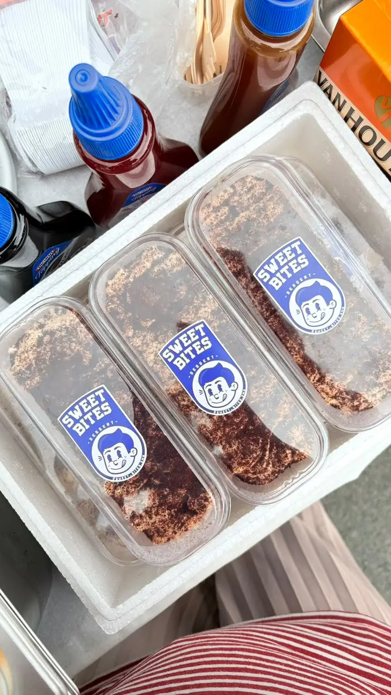

Tiramisu Cheese dari Sweetbites merupakan salah satu varian dessert premium yang paling banyak dicari oleh para pecinta kuliner manis. Mengusung konsep fusion antara cita rasa otentik Italia dan kelembutan cheese lokal, dessert ini diciptakan untuk memberikan pengalaman bersantap yang tak terlupakan. Setiap cup Tiramisu Cheese dibuat dengan menggunakan bahan-bahan pilihan yang melewati proses quality control ketat, memastikan bahwa setiap suapan memberikan konsistensi rasa yang sempurna. Kami menggunakan biskuit ladyfinger berkualitas yang direndam dalam larutan kopi spesial, kemudian dilapisi dengan campuran mascarpone cheese dan whipped cream yang diaduk hingga mencapai tekstur yang sangat halus dan ringan. Rahasia kelezatan Tiramisu Cheese Sweetbites terletak pada keseimbangan rasa antara pahitnya kopi, manisnya krim, dan gurihnya keju yang menyatu di dalam mulut.
Selain keunggulan rasanya, Tiramisu Cheese ini juga dirancang untuk memanjakan mata. Lapisan bubuk kakao murni ditaburkan secara merata di bagian atas dessert, memberikan sentuhan akhir yang elegan dan menggugah selera. Aroma khas kopi dan cokelat langsung tercium saat cup dibuka, memberikan isyarat bahwa hidangan penutup ini siap memanjakan lidah Anda. Dengan harga yang sangat terjangkau, yaitu Rp15.000, Anda sudah bisa menikmati dessert sekelas kafe bintang lima. Dessert ini sangat cocok dinikmati pada sore hari sambil bersantai, atau sebagai pencuci mulut setelah makan malam yang berat. Kami menyarankan untuk menyajikannya dalam keadaan dingin agar tekstur creamy-nya semakin nikmat dan menyegarkan.
Untuk melengkapi pengalaman menikmati Tiramisu Cheese, Sweetbites merekomendasikan Anda untuk memadukannya dengan minuman dari sub-brand kami, OMBENO. Varian Thai Tea 500 ml dari OMBENO adalah pasangan yang sempurna. Karakter Thai Tea yang manis, creamy, dan kaya akan rempah akan menetralisir rasa kopi yang kuat dari tiramisu, menciptakan harmoni rasa yang luar biasa di lidah Anda. Selain itu, Anda juga bisa mencoba memadukannya dengan OMBENO Green Tea yang lebih ringan dan menyegarkan. Semua produk Sweetbites dan OMBENO dibuat dengan standar kebersihan yang tinggi dan dikemas secara higienis untuk menjaga kualitas rasa saat tiba di tangan Anda. Jangan lewatkan kesempatan untuk memanjakan diri Anda dan orang tersayang dengan hidangan penutup istimewa ini. Pesan sekarang dan rasakan sendiri sensasi ledakan rasa Tiramisu Cheese yang legendaris!